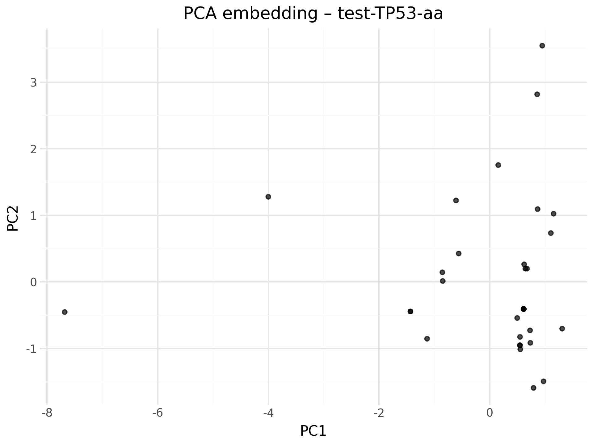
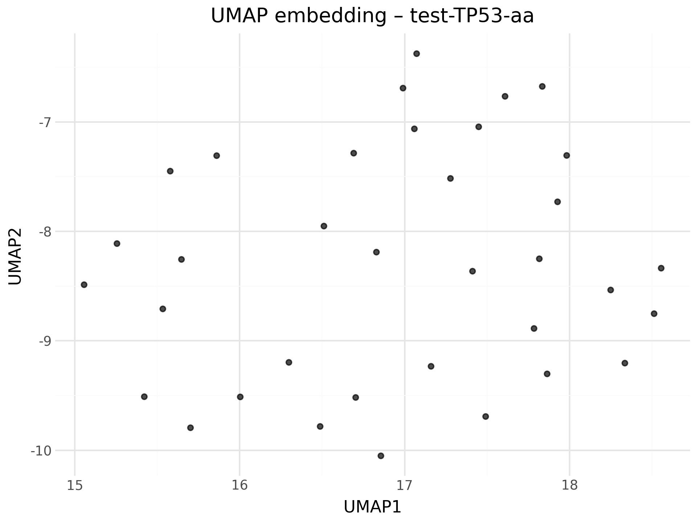

aProfiler report – test-TP53-aa
Input file: data\test-TP53-aa.fasta
Mode: aa
Tables
- global_freqs_csv –
test-TP53-aa_symfreq_global.csv
- pca_embedding_csv –
test-TP53-aa_pca_embedding.csv
- umap_embedding_csv –
test-TP53-aa_umap_embedding.csv
Plots
global_freqs_plot

pca_embedding_plot

umap_embedding_plot

seq_gap_fraction_plot

pid_hist_plot